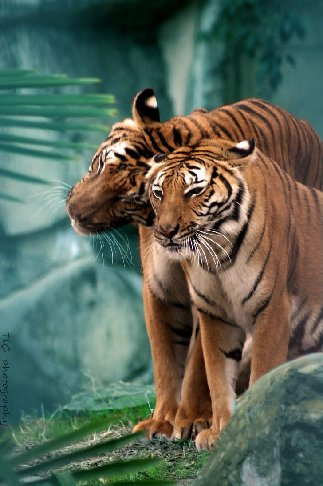
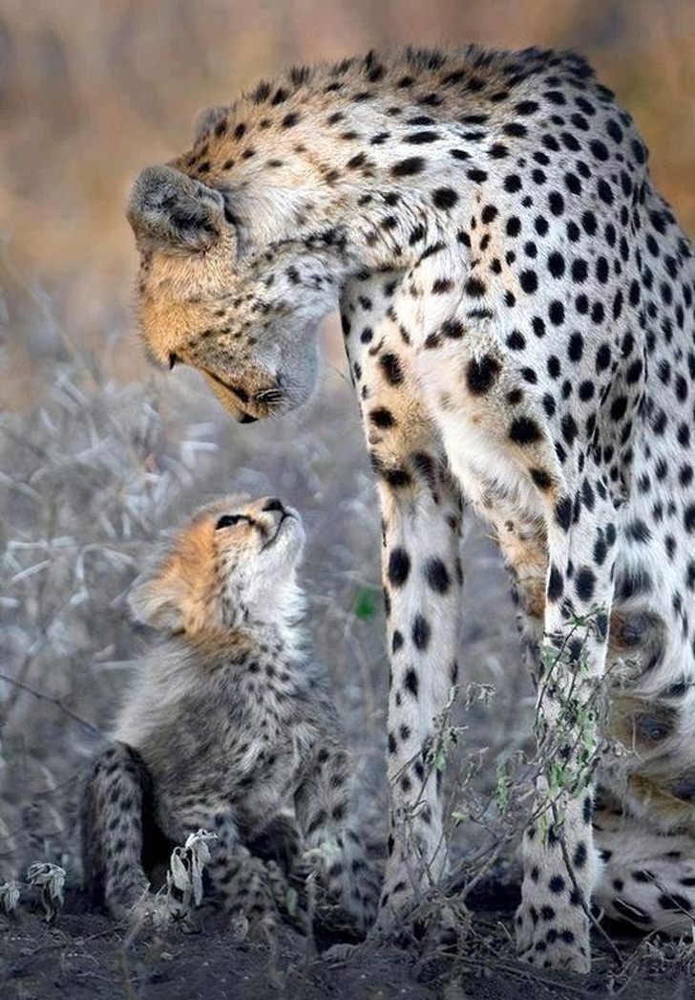
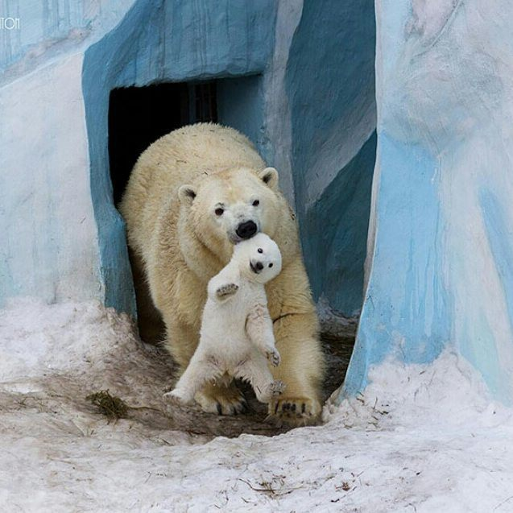

მუშაობს 10.00 სთ - 18.00 სთ
გვესტუმრეთ და იხილეთ გარეული ცხოველები
ბენგალური ვეფხვი — მტაცებელი ძუძუმწოვარი კატისებრთა ოჯახისა. ვეფხვის ყველაზე მრავალრიცხოვანი ქვესახეობაა. 2011 წლის მონაცემებით მათი რაოდენობა შეადგენდა 2500-ს. 2010 წლიდან შეყვანილია წითელი წიგნის საფრთხეში მყოფი სახეობების სიაში
იაგუარი გავრცელებულია ჩრდილოეთ, ცენტრალურ და სამხრეთ ამერიკაში. ბინადრობს ხშირ, ტენიან ტროპიკულ და სუბტროპიკულ ტყეეებში, უპირატესობას ანიჭებს მდინარეთა სანაპიროებს. კარგად დაცოცავს ხეებზე და ცურავს.
მტაცებელი ძუძუმწოვარი ცხოველი დათვისებრთა ოჯახისა. იგი არის არქტიკული ფაუნის ტიპობრივი წარმომადგენელი და გავრცელებულია ჩრდილოეთ ყინილოვანი ოკეანის კუნძულებსა და სანაპიროებზე.